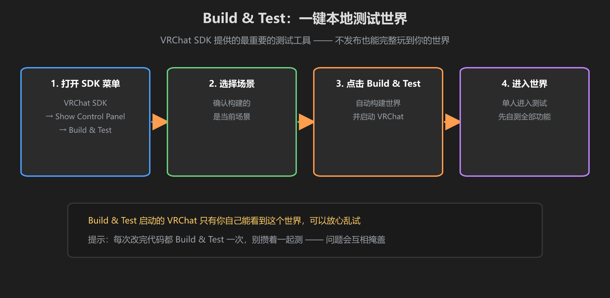
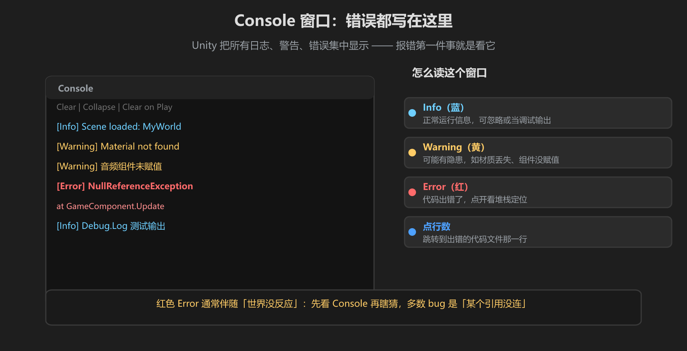

第 2 篇：本地测试 — Play Mode、Build & Test、双开、Console
本地测试是每次开发都要用的基本功：快、免费、随时能跑。这一篇教你在不发布的情况下，把世界测到足够好。
1. Play Mode：最快的逻辑测试
在 Unity 编辑器里直接点顶部工具栏的 ▶ Play，场景立即运行。适合快速验证：按钮逻辑、Udon 脚本、UI 更新。
- 优点：秒开、能直接改代码再继续跑（改完重新编译即可）
- 缺点：不是真正的 VRChat 环境 —— 没有 VRChat 的玩家控制、没有网络、没有真实渲染压力
Play Mode 测不了「VR 里好不好用」，但测「逻辑对不对」完全够。写代码过程中每完成一小步就点一次 Play —— 这是 Udon 开发最常用的节奏。
2. Build & Test：最接近真实的本地测试

图：VRChat SDK 菜单 → Build & Test —— 一键构建并启动真实 VRChat 客户端
- 打开菜单：VRChat SDK → Show Control Panel
- 在 Content Manager 里确认要构建的世界与场景
- 点击 Build & Test —— Unity 自动构建世界并启动 VRChat
- VRChat 启动后自动进入你的世界（只有你一个人能看到）
这是最重要的按钮：Build & Test 启动的是完整 VRChat 客户端，能看到真实光照、真实玩家控制器、真实交互。发布前永远先 Build & Test，别把没测过的构建直接 Publish。
3. 双开客户端：自己测多人
多人测试不一定等朋友 —— 你可以在一台电脑上同时开两个 VRChat：
- 右键你的 VRChat 快捷方式 → 复制一份
- 右键副本 → 属性 → 在「目标」路径末尾加一个空格和
-multi参数 - 先启动普通版 VRChat，再启动带
-multi的副本（第二个实例必须带参数才能双开） - 两个客户端登录同一账号（或朋友来一个），分别进入同一个世界
示例目标路径：
"D:\Steam\steamapps\common\VRChat\VRChat.exe" -multi注意：双开默认要求两个实例都在同一个世界才能互测同步 —— 先进世界的那个人开着不动，第二个实例再搜索同一个世界进入。测试「拔线」：直接把其中一个客户端的窗口关掉，观察另一个客户端的世界状态。
4. Console 窗口：看错误的第一现场

图：Console 把日志分成 Info / Warning / Error 三级 —— 报错先看这里
- 打开方式：菜单 Window → General → Console（快捷键 Ctrl+Shift+C）
- Info（蓝）：正常运行信息，可忽略或当调试输出
- Warning（黄）：可能有隐患 —— 材质丢失、组件没赋值、Udon 没链接
- Error（红）：代码出错了。点开看堆栈，点击行号直接跳到出错代码
5. Udon 调试输出：Debug.Log 在 VRChat 里不显示
在编辑器 Play Mode 里 Debug.Log() 会打到 Console，但在 VRChat 客户端（Build & Test / 线上）里不会显示。想在客户端里看调试信息，用这两种方式：
- VRCConsole：在 Udon 代码里调用
VRCConsole.Log()，Build & Test 的客户端里按 ~（波浪号）键打开控制台查看 - 世界内调试板：把调试文本写到世界里的 UdonBehaviour 文本组件上（做一个 DebugPanel），双开/联机时直接看面板
调试小技巧：多人不同步的 bug 特别适合用「世界内调试板」：每个客户端把本地变量值显示出来，一眼就能看出谁的状态不对。
学前检查清单
- 会用 Play Mode 快速验证 Udon 逻辑
- 会打开 VRChat SDK Control Panel 并执行 Build & Test
- 会创建带 -multi 参数的快捷方式做双开测试
- 会读 Console 的 Info / Warning / Error 并定位错误
- 知道 Debug.Log 在 VRChat 客户端不显示，改用 VRCConsole